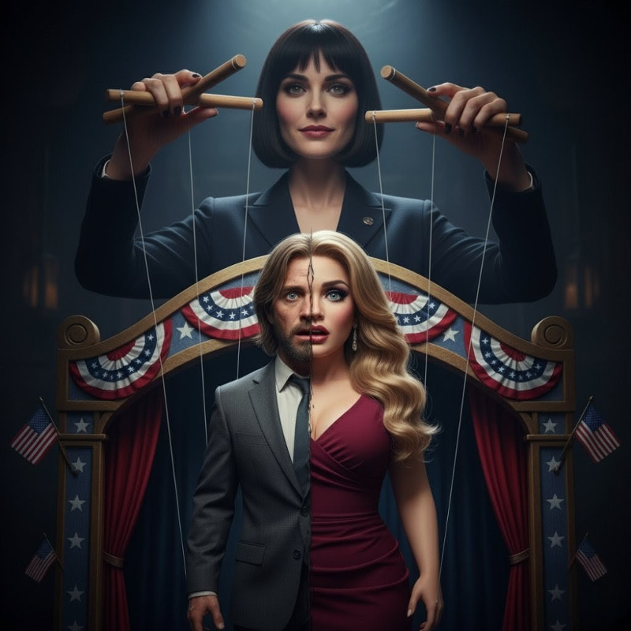

The Instacart notification lit up my phone at 11:47 PM-late enough that most drivers would decline, early enough that someone desperate might take it. I was desperate enough. Pappy Van Winkle, twenty-three year, two bottles nestled in foam like expensive eggs. Delivery to a brownstone in Preston Square. Rich person scotch for a rich person neighborhood. The tip would cover gas for the week if I was lucky.
The normalcy of the gig work was almost soothing. No one looked twice at another delivery driver in an ill-fitting flannel and jeans that hung loose on my frame. Just another invisible person keeping the city fed. Just another failure on wheels, navigating between the restaurants where I used to wine and dine donors and the apartments where I used to live.
Three months since election night. Three months since Tyler Marsh's photos went viral. Three months since I'd watched my entire life detonate in real-time while high on molly in a hotel green room. Three months of discovering that rock bottom has sub-basements, and those sub-basements have crawl spaces where dignity goes to die.
My car-I'd downsized to a ten-year-old Civic-made concerning noises as I navigated away from the liquor store. Everything made concerning noises lately. My bank account when I checked it. My credit score. The constant ringing from collection agencies I'd stopped answering. Even my own breathing sometimes, shallow and panicked in the middle of the night when the hormone withdrawal dreams woke me up sweating.
The aftermath of election night had been swift and brutal. Casey hadn't even let me back in our apartment-our former apartment-after the photos hit every political blog in the state. She'd had an intern pack my things while I was at the emergency room, getting checked after the incident triggered what the intake nurse had carefully called "acute psychological distress." By the time I was released twelve hours later, my belongings were in boxes at a storage facility and the locks had been changed.
"I can't do this anymore," she'd texted. "I'm sorry." Eight words to end everything-seven years of partnership, months of saying she loved me, all the nights she'd whispered my name in the dark.
Not that I blamed her. The photos of me on my knees in that green room, Beau's hand tangled in my hair, my dress sliding off-they'd gone viral within hours. Every political operative in the state had seen them. Hell, they'd made national blogs by breakfast. "Governor's Trans Hotel Scandal" became the story everyone pretended to be scandalized by while secretly forwarding to their group chats.
Beau tried to weather it. For three weeks he insisted the photos were "taken out of context" and represented "a momentary lapse in judgment during celebration." His communications team-Derek, actually, since I'd been fired before my security clearance was even revoked-pushed the narrative that it was a personal matter that didn't affect his ability to govern.
Then Jenny Lamont came forward again with her story about the lake house weekend. Two other women followed. Then an underage intern from his first campaign who'd been nineteen at the time but looked younger. Once the dam broke, the flood was unstoppable. Each revelation made my scandal look quaint by comparison, but I was already radioactive. The first domino in Beau's collapse.
He resigned on a Thursday, barely five weeks after winning re-election by eight points. Rivera had stepped into the governorship like he'd been preparing for it his whole life. Maybe he had. Within a week, he'd announced Casey Parker as his Chief of Staff-the youngest in state history, the brilliant woman who'd helped navigate the transition, the strategic mind who'd somehow emerged from the scandal completely untouched.
I watched it all from a motel room in Riverside, the kind that rented by the week and didn't ask questions about why someone was shaking and sweating through what looked like heroin withdrawal but was actually just my body screaming for estrogen it would never get again.
Going cold turkey on the hormones had been brutal in ways I hadn't anticipated. Night sweats that soaked through my sheets, mood swings that had me sobbing over commercial jingles one minute and punching walls the next. Joint pain that made walking feel like grinding broken glass between my bones.
I'd tried going back to being Evan. Really tried. Stopped the hormones the week after the scandal broke. Cut my hair myself with kitchen scissors in that motel bathroom mirror, hacking away at the extensions until I looked masculine enough to get hired somewhere, anywhere. Bought men's clothes from Goodwill that hung wrong on hips that had widened and a waist that had narrowed. But testosterone took months to kick back in, and the changes estrogen had made didn't seem to be in a hurry to reverse themselves. The result made me look exactly like what I was-desperate and falling apart and somewhere between genders in the worst possible way.
So I existed in this liminal space-too feminine to pass as male, too obviously trans to pass as a cis woman, recognizable enough that sometimes people stared but not quite enough that they could place where they knew me from. The worst of all possible worlds. Not man enough, not woman enough, not invisible enough to escape.
As I pulled away from the liquor store, my phone buzzed. Jazmine. Again.
"Hi honey. Just checking in. I know the world feels impossibly cruel right now, but you're not alone."
I stared at the message, thumb hovering over the keyboard. Jazmine had been relentless since the scandal-supportive messages, invitations to support groups, constant reminders that the community stood behind me. The trans community had claimed me as one of their own, traumatized by public humiliation, driven back into the closet by shame and society's cruelty.
Three months ago, she'd left a voicemail that I'd played obsessively during the worst nights:
"Listen, I get it. Detransitioning happens. The world makes it so fucking hard to exist as ourselves that sometimes we have to retreat just to survive. But honey, that doesn't erase who you are. It doesn't make your journey less valid. You're still one of us, even if you need to be Evan right now. Even if you can't be Yvonne publicly, even if you need to hide to survive, you still matter to us. You still matter to me."
Every word was a knife. She thought I was detransitioning out of trauma, that the cruelty had driven me back into the closet. The truth-that I'd been a tourist appropriating their struggle, that I'd used their identity as a costume in my political psychodrama-was so much worse. I'd invaded their space, claimed their pain, accepted their support under false pretenses. And now I couldn't even confess without destroying the illusions of people who'd shown me nothing but kindness.
So I did what cowards do. Nothing. Let her think I was traumatized rather than fraudulent. Let her messages pile up unanswered. Let her believe I was a wounded sister instead of a lying brother who'd made a mockery of everything she'd fought for.
I typed: "I'm okay." Deleted it. Typed: "Thank you for caring." Deleted it. Typed: "I was never really-" Deleted that too.
Before I could type out another message I'd probably also delete, she texted again: "whatever you decide about your identity, I'll support you. just please don't disappear completely."
But disappearing was all I knew how to do anymore. Easier than explaining that I'd used her genuine struggle as costume, that I'd made her an unwitting accomplice in my own destruction. Some people deserved better than truth, and Jazmine was definitely one of them.
The job search had been a cruel joke. Every political position, every consulting firm, every nonprofit that might have used my skills-they all did the same dance. They'd Google my name, find the photos, find the think pieces about what "The Yvonne Cross Scandal" meant for trans representation in politics, find the hot takes about whether I was victim or villain or both. The few who brought me in for interviews did it out of morbid curiosity, the way people slow down for car accidents.
"We're looking for someone who can maintain a lower profile."
"The team dynamics are delicate right now."
"Your qualifications are impressive, but the board has concerns about the media attention."
Translation: You're radioactive. We'd rather hire someone competent than someone infamous.
So here I was, delivering liquid gold to people who'd forgotten I existed, assuming they'd ever noticed me in the first place. The delivery app didn't care about my past as long as I got the bottles there unbroken. No background check required beyond a driver's license and proof of insurance. No questions about why someone with a Georgetown degree and seven years of senior government experience was delivering hooch at midnight.
Preston Square hadn't changed-same pristine brownstones, same invisible boundaries between old money and new money and no money at all. I parked my dying Honda outside a converted Victorian, one of those buildings that had been carved into "luxury apartments" for young professionals who wanted to feel bohemian while paying four grand a month for exposed brick and original hardwood.
I knocked on 4B, already reaching to carefully extract the bottles and get this over with so I could move on to the next delivery, the next tip, the next few dollars toward keeping my car running.
Tommy Danielson opened the door.
For a brief moment, neither of us moved. He stood there in expensive loungewear with a drink in hand, looking prosperous and satisfied in ways that made my blood ignite.
"You piece of shit," I growled.
His face cycled through surprise, recognition, and something else-guilt, maybe.
"Holy shit. Evan?"
"Here's your liquor." I thrust the bag toward him, needing to leave before I did something stupid like punch him or start crying. "Hope you choke on it."
"Wait." He stepped back, opening the door wider. The gesture was cautious, like approaching a feral cat. "Come in. We should talk."
"Fuck you."
"Seriously. Five minutes." His voice carried none of the smug incompetence I remembered. "Please. I'd like to thank you."
"For what?"
"For firing me. Best thing that ever happened to my career." He said it earnestly, like he actually meant it. "Casey made sure I landed well. Job in Chicago, moving bonus, the works. I'm making twice what you paid me."
"Casey helped you?" The question came out strangled.
"Helped? She held my hand through the whole thing. The day you fired me, she's got me on a plane to Chicago with a new job lined up. She even sent someone to drive me, make sure I made the flight and didn't change my mind." He paused. "She said you'd overreacted and she wanted to make sure I landed on my feet. That you'd been under a lot of stress."
"Why would she-"
"I don't know. But come in. Please. I've felt like shit about how things went down." His expression was open. "Five minutes."
I was already stepping inside before my brain caught up with my feet. The churning questions in my mind had displaced the rage, the survival instinct, the professional mask. The apartment was beautiful-open floor plan, exposed brick, floor-to-ceiling windows overlooking the square. The kind of place that required the salary I'd lost.
"Nice place," I said, hearing the bitterness in my voice. "Revenge photography pays well."
Tommy's confusion looked genuine. He closed the door behind me, moved to the kitchen island. "What?"
"Don't play stupid." The accusation came out harsh, months of rage reigniting. "You leaked those photos of me in the dresses to the Grudge Report. You wanted revenge for being fired, so you destroyed my entire fucking life."
"I didn't take any photos." He set down his drink carefully, like sudden movements might spook me. "Like I said, I was in Chicago when that happened. I wasn't even in the state when your news broke."
"Bullshit."
"I'm serious." He pulled out his phone, started scrolling through Instagram with the deliberate movements of someone proving a point. "Look. Chicago. The Bean. Navy Pier. All the day after you fired me." He held the screen toward me. "I didn't even know about your transition until I saw it on the news a week later."
"Then who-" I couldn't finish the question. My throat had closed up.
"I don't know. But it wasn't me." He moved to the kitchen, pulled out a second glass without asking. "You want a drink?"
"No." Then: "Yes."
He poured a double of something amber. We sat on opposite ends of his expensive leather couch and I tried to reconcile this collected person with the bumbling press secretary I'd fired months ago.
The silence stretched. I took a sip. The whiskey was smooth in ways that grocery store bourbon never was. It tasted like the life I used to have.
"So you didn't take the photos," I said finally. "But why invite me in? Why not just take your liquor and shut the door?"
"Because you didn't deserve what happened to you." He said it simply, like it was obvious. "And because I feel guilty about that joke I made."
The memory surfaced-Tommy's crude comment about me being on my period, the final straw that had justified his termination. The thing that had seemed so unforgivable at the time.
"That joke got you fired," I said.
"I know. And I deserved it-it was inappropriate as fuck." He took a drink, gathering words. "But the thing is, I only made it because Casey made the exact same joke earlier that day."
The room tilted slightly. The expensive whiskey turned to acid in my stomach.
"What?"
"During a staff meeting that morning. When you weren't there." He looked at me directly, no evasion in his expression. "She said something about how you'd been 'emotional lately, must be that time of month.' Everyone laughed. It was gross, but everyone was doing it, and Casey started it."
My vision narrowed to a single point. The glass in my hand felt very far away.
"I thought it was okay to say," Tommy continued. "Like, if the Deputy Chief of Staff was making period jokes about the Chief of Staff, then clearly it was acceptable office banter or whatever." He paused. "That's why I was so confused when you went nuclear on me for saying basically the same thing she'd said. I mean, I get it now-I was completely out of line. But at the time it felt unfair."
Something cold spread through my chest, radiating out from my heart like frost across glass. "And Casey got you the Chicago job."
"Immediately. Said she felt bad that you'd overreacted, that you'd been under stress, and she wanted to make sure I landed on my feet." He studied my face. "She had the whole thing arranged. It was almost like she'd been planning it."
I stared at him dumbly. I'd run out of things to say.
His expression shifted to something like pity. "You really didn't know."
We sat in silence while my brain tried to process the implications. If Tommy had been in Chicago, he couldn't have taken the photos. But Casey had made sure he wasn't around to tell anyone that. And if she'd already had a job lined up for him, as if she knew I'd fire him. As if she'd been counting on it.
"Fuck," I whispered.
Tommy refilled my glass without asking. "Look, I don't know what happened between you two. But Casey's always been brilliant at playing chess while everyone else is playing checkers. She sees ten moves ahead. If she wanted something to happen..." He let the implication hang in the air.
I stood on legs that felt disconnected from my body. The expensive apartment swam slightly, or maybe that was just my vision adjusting to a new reality where nothing I'd believed about the past ten months was true.
"I should go."
"Yeah." Tommy stood too, walked me to the door. "For what it's worth, I hope you land on your feet. You were a good boss. Better than I deserved."
The door closed behind me with a soft click. I stood in the hallway for a long moment, breathing in recycled air that smelled like expensive candles.
I sat in my car for a full twenty minutes, mind racing through a timeline I'd thought I understood. If Tommy was in Chicago before the photos leaked, he couldn't have taken them. Which meant someone else had. Someone with access to the building. Someone who knew exactly where I'd be and when.
Casey suggesting the cabin weekend-"get away this weekend, clear your head." She'd known I'd be unreachable when the photos surfaced Saturday night. She'd had crisis statements prepared impossibly fast because she'd known exactly when the story would break.
My mind spun to other coincidences that maybe weren't. That first morning when I'd needed help with feminine presentation, Alex had appeared within hours. Too convenient. Too prepared. Like they'd been waiting for Casey's call, supplies already assembled.
The hormone appointments with Jazmine-Casey's introduction. She'd pushed me toward the trans community that would normalize and accelerate my transformation, make it seem authentic instead of strategic.
The pharmaceutical dependence that had isolated me from everyone except strangers at Pulse. The interrupted intimacies that had pushed me toward seeking attention elsewhere. The constant crises that made Casey indispensable while I spiraled into incompetence.
All of it, carefully orchestrated.
Except none of it quite fit together yet. Individual puzzle pieces scattered across a table, but I couldn't see the picture they were supposed to make. Couldn't force the connections that would reveal whether I was paranoid or finally seeing clearly after months of deliberate blindness.
My father would have known. He'd built his entire legendary career on reading these patterns, on seeing the invisible threads connecting seemingly unrelated events. One conversation with him and he'd either confirm I was losing my mind or show me exactly how comprehensively I'd been played.
But I couldn't call him. That bridge had burned so thoroughly there wasn't even ash left, just the scorched earth where our relationship used to be.
The memory surfaced unbidden-our last conversation, two weeks ago. I'd finally broken, finally swallowed enough pride to try.
James Cross had agreed to see me with the reluctance of someone meeting an obligation he'd rather avoid. His assistant had booked me for thirty minutes on a Thursday afternoon, slotted between a state senator and a nonprofit director who actually mattered.
His office hadn't changed-same photographs of political victories lining the walls, same leather chairs that cost more than my current monthly income, same view of the Capitol building I'd once believed I'd work in until I retired.
"You look terrible," he'd said by way of greeting, not even standing when his assistant showed me in.
"I need help."
"With what? Your career is radioactive. Nobody in this state will touch you." He'd leaned back in his chair, studying me with the analytical detachment of a scientist examining a failed experiment. "You made yourself a cautionary tale. That's not something I can fix."
"I made mistakes-"
"Mistakes?" His laugh carried genuine bitterness, the kind that comes from watching your legacy get burned down by a child playing with matches. "You turned yourself into a fucking sideshow. Made a mockery of transgender people, humiliated yourself publicly, destroyed a sitting governor, and dragged the family name through the mud in the process. Those aren't mistakes. That's self-destruction as performance art."
"Dad-"
"Don't." He'd held up his hand, the same gesture he'd used to silence me as a child when I'd disappointed him. "I spent forty years building a reputation in this state. Opened doors for you, made introductions, gave you credibility based on my name alone. And you pissed it away to play dress-up in a political psychodrama."
"I was trying to survive a bad situation-"
"By making it infinitely worse at every turn." He'd stood then, signaling the conversation's end. "Your mother would be ashamed. I know I am."
The invocation of my dead mother had been the killing blow, and he knew it. The cruelty was calculated, precise, designed to cut where I was most vulnerable.
"I just need a loan," I'd said, hating the desperation that crept into my voice. Hating how small I sounded. "Enough to get back on my feet. I'll pay you back."
"No. No way in hell." He'd moved to the window, looking out at the Capitol dome like it held more interest than his only child. "I tried to help you. You chose to destroy yourself. You're no longer my responsibility to fix."
He'd walked to the door then, opening it with the finality of a judge delivering sentence. His assistant looked up from her desk, pretending she hadn't heard every word through the thin walls.
"If you'd come to me back in January, when Beauregard first started his games, I could have helped. Could have found you an exit that preserved your dignity and your career. But you kept making it worse. Kept digging deeper." He'd paused at the threshold, delivering the final blow. "At some point, bad decisions stop being mistakes and become character. You've shown me your character, son. I want no part of it."
The door had closed with the soft finality of a coffin lid.
Sitting in my car outside Tommy's building now, my father's words from our last meeting before the election came back with new meaning: "When everyone's motivations align too perfectly, someone's being played."
He'd been warning me about Casey all along. He'd questioned her meteoric rise. He'd pointed out how conveniently she'd positioned herself. I'd dismissed all of it as him being paranoid or threatened by a competent woman.
I'd defended her. Told him he didn't understand modern politics. Accused him of being intimidated by ambitious women. Every warning he'd offered, I'd thrown back in his face while.
"Fuck." The word came out broken, shaped by the understanding that I'd walked into a trap while thinking I was making brilliant tactical decisions. That I'd ignored the one person who could have saved me because I was too arrogant to believe I needed saving.
I started the car. The engine made that grinding noise that meant something expensive was wrong, but I ignored it. I knew exactly where I needed to go.
Twenty minutes later, I was entering the code at our old apartment building. The building access code hadn't changed-2-7-8-4, same as always. Casey had kept the apartment after kicking me out, kept our life as her solo domain while I'd descended into motel rooms. The elevator ride to the third floor felt like ascending to judgment.
I knocked. The door opened immediately, like she'd been waiting.
"Evan. You've started piecing it together," Casey said.
She looked exactly like success. Perfect bob without a hair out of place, tight dark jeans, cashmere sweater in a shade of gray that made her eyes look dangerous. That particular glow that comes from winning completely. Behind her, the apartment looked different-Casey had redecorated, removing any evidence I'd ever lived there. New furniture in shades of white and chrome, new artwork on walls I used to see every morning, everything carefully curated to reflect a life that had never included me.
"Come in," she said, stepping aside like she was inviting me to a social call. "Give me your phone."
"Why?"
"Because you're here to confront me and you're probably recording." Her hand extended with absolute confidence, palm up. "I won't have this conversation while you're wearing a wire."
I handed it over. She placed it in a drawer-my old junk drawer, actually, the one I used to keep charger cables in-then settled into what used to be my reading chair.
"Let me guess," she said, settling back like we had all the time in the world. "Tommy told you I sent him away. Made you realize he couldn't have taken the photos."
"You knew I'd figure it out eventually."
"I thought it might be sooner." She studied me with detached interest. "I'm a little disappointed, honestly. How is gig work treating you?"
"You took them." I ignored her question, pushed forward. "The photos. Not Tommy. You."
"Security footage, actually. Amazing what you can pull when you're Deputy Chief of Staff with administrator privileges." She said it conversationally, like describing a recipe.
"The whole thing. You planned all of it."
"Planned is strong. Guided? That feels more accurate." She stood, moved to the window that overlooked the city. "You were so easy to steer, Evan. Every escalation, every choice-you picked the most dramatic option every time, exactly like I knew you would."
My hands were shaking. I shoved them in my pockets. "The escalation with Beau. The look getting more extreme. That was you."
"You made those choices." She turned back to face me, backlit by city lights. "I just created the framework that made them seem logical. You're the one who decided to prove a point about masculinity by becoming the most feminine version of yourself you could manage. As if that makes any sense at all. But I wasn't going to let the opportunity go to waste."
"You said you'd help me. That you were on my side."
"I was managing you. There's a difference." She moved past me to the kitchen, refilled a wine glass I hadn't noticed she was holding. "You needed to believe someone was on your side, or you might have backed down. Can't have that when you're trying to prove a point to Beauregard Fenstemaker."
"But you were-" I stopped, trying to find words for the betrayal. "You helped me with makeup. With clothes. You were there every morning."
"Because you needed me to be." She took a sip, savoring it. "And because I needed you dependent. Isolated. Convinced that I was the only person who understood what you were going through."
Each word was a knife sliding between ribs. "Was any of it real?"
"That's a boring question." She waved it away like smoke. "Of course some of it was real. I did find you quite attractive as Yvonne. The transformation was genuinely impressive. I almost regretted having to distance myself from you to make you sexually frustrated and desperate."
The casual admission made bile rise in my throat. "You used sex to control me."
"I used everything to control you. The sex-I'll admit it was good-was just an added benefit." She settled into the chair across from me, legs crossed elegantly. "You were spiraling, making mistakes, giving me opportunities to step in and manage things. The demotion to Press Secretary was a gift I didn't even have to engineer, though. Beau did that himself."
"The period jokes to Tommy." My voice came out hoarse. "Knowing he'd repeat them. Knowing I'd fire him."
"I might have mentioned you seemed emotional that week." She smiled, and it was terrifying in its warmth. Like she was proud of her own cleverness. "Made a few observations about monthly cycles during a staff meeting. Men are so predictable when given the right prompts. I knew you'd overreact and fire him, and I already had Chicago lined up as his soft landing."
"Why send him away?"
"Because he was fucking terrible at that job and you know it. But also, then he couldn't be around when the photos dropped. Too many questions about timeline, about who had access, about opportunity." She said it like it was obvious. "Much easier if he was already gone, already grateful to me for saving his career after you 'overreacted.'"
My brain was trying to process too much information at once. "You set me up with Jazmine."
"Initially just for peer pressure, yes. To make the transformation seem authentic, give you community buy-in." Her expression didn't change, still that pleasant mask of someone discussing gardening or the weather. "The hormone appointments were honestly a lucky accident-I didn't plan for Jazmine to drag you to that clinic. But once it happened, it solved so many problems."
"The hormones." Something was crystalizing. "Dr. Martinez said the changes were happening faster than normal."
"Oh, Evan." Casey's smile widened into something predatory. "I thought you were smarter than this. Hormones don't create changes like that in just a few months."
The room spun. "What did you do?"
"The vitamins you took every morning?" She said it gently, almost kindly. "I'd been giving you low-dose oral estrogen and testosterone blockers since your little journey started. Just enough to start softening you up."
"You drugged me." It came out as a whisper.
"Technically, yes. But you took them willingly every morning." She shrugged, unbothered. "And the appetite suppressant? Low-dose Xanax. Made you scattered, incompetent, easier to manage. Made it easier for me to start taking over your duties without you noticing."
"You poisoned me."
"Now I think that's a bit of an exaggeration." She took another sip of wine. "The brain fog, the mistakes, the emotional outbursts-all very convenient for someone trying to prove they deserved your job."
"Victoria." I was putting it together piece by piece, each revelation making the last one worse. "That day she transformed me. You left right before Beau showed up."
"He texted that he was coming by. I knew he wouldn't be able to resist a little payback once he saw you so helpless." Her smile turned cruel.
"Election night." My voice was barely audible. "The hotel. Tyler."
"Simple logistics, really." She set down her wine glass, leaned forward like she was sharing a secret. "I told Tyler to meet me in the green room forty-five minutes after I sent you there. Said I had exclusive news about Rivera's transition planning. He thought he was getting a scoop."
"You sent me there knowing-"
"I sent you there high on molly, after months of being sexually frustrated." She leaned back, satisfied. "You'd been carrying those pills around for weeks, popping them at that club every night. Victory party adrenaline always made you reckless. Add alcohol, add Beau, add a private room..."
"You couldn't have known Beau would-"
"Would what? Try to fuck you?" She laughed, and it was genuinely amused. "Evan, the man spent six months staring at your tits and making excuses to get you alone. Two men with poor impulse control and a lifetime of bad decisions in a private space? Something was going to happen. The specifics were surprising-I'll admit the photos were more graphic than I expected-but the outcome was inevitable."
"You ruined my life." The words came out flat, drained of emotion.
"You ruined your own life the moment you put on those panties to prove a point to Beauregard Fenstemaker." She returned to her chair, crossing her legs. "Everything else was just momentum. You always had a choice-you could have apologized to Beau, could have backed down, could have stopped at any point. But that's not who you are. I just recognized that before you did."
The completeness of it was staggering. Every move calculated, every response anticipated. I'd been a puppet thinking I was the puppeteer, and she'd been holding the strings all along.
{kind=link}

She studied me for a long moment, then her expression shifted into something almost genuine. Real emotion showing through for the first time since I'd arrived.
"You want to know why." It wasn't a question.
"Yeah." My voice came out hoarse. "I really fucking do."
"Because you and Beau were everything wrong with politics." She stood, moved to the window again, but this time there was energy in it. Real feeling breaking through the calculated facade. "Inherited power, assumed authority, careers built on lineage instead of merit. Him with his grandfather's name and inherited office, coasting through his administration. You with your father's connections and assumed brilliance, getting senior positions straight out of grad school because daddy made calls."
"So you destroyed us."
"I cleared the board." She turned back, and her eyes were blazing now. "You know how I started? Unpaid internships. Sixty-hour weeks for free while guys like you got hired straight into positions I was more qualified for. Working three jobs to afford rent while you lived in apartments your father co-signed for. Learning to be twice as good for half the recognition."
"You could have just-"
"Just what? Worked harder? I was already working harder." She moved closer, and I could see genuine anger now. "You talk about your father's legacy like it's this burden you carried, but it opened every door you ever walked through. Beau's family name got him elected despite being a womanizing drunk. And you both just... assumed you deserved it. Never questioned whether you'd earned your positions."
"I was good at my job."
"Parts of it." Her voice was sharp. "You never would've gotten where you were without my help."
"So you burned it all down."
"I cleared space for actual competence." She gestured to framed photos on her walls-Rivera signing legislation, Casey standing beside him at press conferences, newspaper headlines about policy victories. "Look what Rivera's done in four months. Actual healthcare reform. Education funding that helps real kids. Infrastructure investment that isn't just contractor kickbacks. That's what leadership looks like."
"With you running it."
"Youngest Chief of Staff in state history." Her smile was sharp. "And unlike you, I earned it."
I couldn't deny that. She had earned it. By destroying me, yes, but also by being better at the game than I'd ever been. By seeing ten moves ahead while I was still trying to understand the current board.
"I want my life back," I said, knowing how pathetic it sounded even as the words left my mouth. Like a child asking for a toy someone else was playing with.
"Evan Cross is dead." She said it gently, almost kindly. "Buried so deep he'll never surface. The photos, the scandal, the humiliation-that's permanent. No amount of detransitioning will undo what happened in that hotel room."
"Then what do you want from me? Why tell me all this?"
"Because you're brilliant at policy and that's being wasted on liquor delivery." Her voice shifted, took on that tone she'd used when convincing me to wear the dress that first morning. Reasonable. Practical. "Because Rivera needs specific support for his national ambitions. Because I recognize talent even when it might need a little… repackaging."
"You want me to work for you." The laugh that came out was ugly. "After everything you did, you want me to help you?"
"I want to offer you a way back. Back to relevance. Someone who could wield real influence behind the scenes." She leaned forward, and I could see the calculation return. "Policy work, strategic planning-the substantive stuff you're actually good at. The work that makes real people's lives better."
"Why would you help me?"
"Because despite everything, you're one of the few people who can craft policy that actually works. Because Rivera's presidential run will need that expertise. Because keeping you broken and desperate serves no purpose now that you understand what I'm capable of." She paused. "And because I'm offering you the only path back to the life you actually want."
The offer hung between us. Every instinct I had left screamed not to trust anything Casey proposed. I should have walked out. Should have told her to go to hell and slammed the door on whatever fresh manipulation she was offering. Should have maintained some shred of dignity even if it meant staying broken.
But I didn't move.
Because she wasn't wrong. I was dying out there. Not from the empty bank account or the maxed credit cards or the car that was one breakdown away from leaving me stranded. I'd been poor before. Poverty was uncomfortable but navigable.
What was killing me was the irrelevance.
Three months of watching politics happen without me. Three months of reading news about Rivera's campaign, about Casey's brilliant strategy, about policy decisions I could have crafted better. Three months of being a spectator to the game I'd once played at the highest level.
My father and I shared one thing: we'd always needed to be important. Needed to matter. It wasn't enough to have a job-I needed to be the person making decisions, shaping outcomes, seeing my fingerprints on policies that affected real lives.
Delivering groceries and liquor wasn't humiliating because it was menial work. It was humiliating because it was invisible. Nobody cared who brought their vodka and eggs. Nobody would remember my name or ask my opinion or need my expertise.
I'd rather be broke and relevant than comfortable and forgotten.
Casey watched me process all of this, watched the calculations play across my face. She knew me too well. Knew exactly what I was going to decide. But she did me the favor of asking me anyway.
"What's it going to be, Evan?" She checked her watch with theatrical precision. "It's getting late. Poverty and continued deterioration while you cling to a past that doesn't exist anymore? Or accepting reality-the reality I created, yes, but reality nonetheless-and rebuilding something functional from the wreckage?"
"There's a catch." I made it a statement, not a question. "There's always a catch with you."
"Oh, there's definitely a catch." Her smile widened, and for the first time since I'd arrived, she looked genuinely pleased with herself. Like a chess player about to deliver checkmate. "A big one."
"Tell me."
Casey's smile turned into something that belonged in a Renaissance painting of temptation-beautiful and terrible and absolutely certain of victory.
"You're not going to like it."